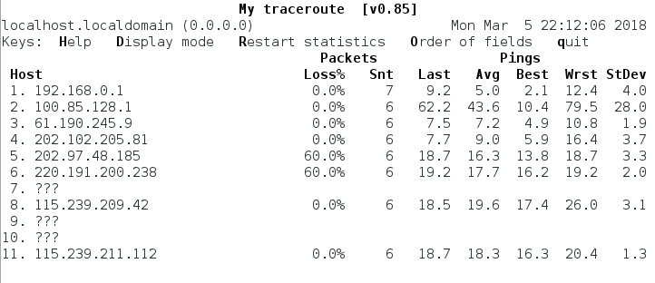

1、检查和监测网络
①、ping
ping ipaddress
ping命令会发送一个ICMP_ECHO_REQUEST 的数据包到一台指定的主机，大多数接收到数据包的设备都会回复它
②、traceroute
数据包所经过的路由"跳数"
③、netstat 查看网络状态
netstat -ie 查看本地主机状态（网卡信息）
④、mtr (mytrraceroute ) ip 显示每个节点ping命令实时情况返回 
vi /etc/sysconfig/network-scripts/ifcfg-enp0s3 修改本地Ip地址
2、网络中传输文件
ftp 文件传输协议，ftp程序是用来连接FTP服务器的
账号密码以明文的形式传输。

②、wget
wget -r ipaddr
wget不仅能从FTP服务器上下载文件，还能从网页上下载内容，甚至能下载整个网页的文件。
3、与远程主机建立安全通信
ssh username@hostname
SSH 由两部分组成。SSH 服务器运行在远端主机上运行，在端口号 22 上监听将要到来的连接，而 SSH 客户端用在本地系统中，用来和远端服务器通信
SSH首先需要认证远端系统的正确性，其次整个通信过程加密
exit退出远程系统。
ssh命令允许我们在远端某个系统中执行命令，并将结果返回到远端或者本地系统；
1、scp：

用户名@主机名：表示远端系统的路径
2、sftp：不要求远端系统运行FTP服务器，仅要求远端系统运行ssh服务器

1、想让一台主机能够上网需具备以下条件：
IPPADDR 网络地址
MASK 子网掩码（确定网络地址）
GATEWAY 网关
DNS
2、ifconfg -a 查看系统所有网卡的信息
ifconfg enp0s3 查看特定网卡的信息
网卡配置信息 /etc/sysconfig/network-scripts/ifcfg-emp0s3

dns配置信息 /etc/resolv.conf

更改主机名 /etc/sysconfig/network